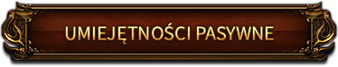
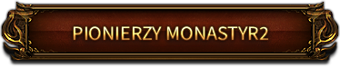
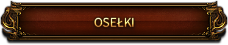
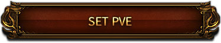
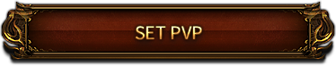

Monastyr2 to klasyczny serwer w formie medium/hard, oparty na dobrze znanej wszystkim formule gry. Naszym celem jest zachowanie klimatu starego, dobrego Metina, a jednocześnie wprowadzenie świeżych rozwiązań, które odpowiadają współczesnym oczekiwaniom graczy.
Od samego początku stawiamy na stabilność i długoterminowy rozwój projektu. Monastyr2 został zaprojektowany tak, aby zapewniać nie tylko płynną i niezawodną rozgrywkę, ale także realną perspektywę na wiele lat funkcjonowania. Nie interesują nas serwery chwilowe czy nastawione na szybki zysk – chcemy być miejscem, do którego gracze chętnie wracają, mając pewność, że ich czas i wysiłek nigdy nie pójdą na marne.
Ważnym fundamentem naszego projektu jest bliski i szczery kontakt z graczami. Wierzymy, że to właśnie Wy tworzycie serwer i nadajecie mu charakteru. Dlatego Monastyr2 to serwer „od polskiego chłopa, dla polskiego chłopa” – budowany przez ludzi, którzy sami od lat grają w Metina i wiedzą, jak istotne jest sprawiedliwe podejście, otwarta komunikacja oraz rozwój, w oparciu o feedback i rosnącą społeczność. Naszym celem jest wspólna zabawa i rozwój – razem jako społeczność, opierając się na autentyczności, a nie na pozorach.

Listopad / Grudzień 2025
Nie podajemy sztywnej daty startu – zależy nam, abyście otrzymali maksymalnie dopracowany serwer. Planowany miesiąc to listopad, jednak dokładny termin pozostaje ruchomy. Na bieżąco będziemy informować o postępach i ewentualnych zmianach, aby zapewnić Wam jak najprzyjemniejsze warunki do gry.

- Maksymalny poziom: 105
- Typ serwera: hard/medium
- Królestwa:
 Jinno
oraz
Jinno
oraz
 Chunjo
oraz
Chunjo
oraz
 Shinsoo
Shinsoo
- Bonus 6/7: Nie
- Punkty statusu: 90
- Klasy postaci: 4
- Alchemia: Tak
- Szarfy: Nie
- Dostępne kanały: 5


Role w Administracji są jasne i większość z Was doskonale je zna. Dlatego zamiast pisać długie opisy dotyczące funkcji, wolimy, by o naszej pracy świadczyło to, co sami zobaczycie i doświadczycie w grze.

Jako nieliczni w Polsce wprowadzamy zmianę klienta z 32-bitowego na 64-bitowy, co gwarantuje większą stabilność oraz płynniejszą rozgrywkę.
Dzięki licznym usprawnieniom technicznym gra działa wydajniej, zużywa mniej pamięci i zasobów, co przekłada się na brak nagłych crashy czy lagów, nawet podczas długich sesji.
Poprawiliśmy również jakość grafiki – cienie, mgła oraz efekty prezentują się lepiej i bardziej nowocześnie.
Dodatkowo zoptymalizowaliśmy działanie w walkach masowych, aby nawet przy dużej liczbie graczy na ekranie rozgrywka pozostała płynna.
Wszystkie te zmiany sprawiają, że gra stała się bardziej stabilna, szybsza i przyjemniejsza, a Ty możesz cieszyć się rozgrywką na najwyższym poziomie.
▶ Rozwiń, aby zobaczyć wideo

Zgodnie z przeprowadzoną ankietą na naszym discordzie
zdecydowaliśmy się dodać system Farm-Block.

System Farm-Block został wprowadzony, aby ograniczyć nadużycia
związane z masowym korzystaniem z wielu kont jednocześnie.
Każdy gracz może aktywnie farmić maksymalnie 2 kontami.
Po przekroczeniu tego limitu, system automatycznie blokuje możliwość dalszej gry
na kolejnych postaciach.
Liczba kont jest osteteczna - jest wynikiem ankiety oraz dyskusji prowadzonej na
discordzie serwerowym.
Działanie systemu Farm-Block
Od teraz możecie korzystać maksymalnie z 2 kont do aktywności PvE.
Pod tym pojęciem rozumiemy:
- zadawanie obrażeń potworom, metinom i bossom,
- wydobywanie rud,
- łowienie ryb.
Konta powyżej tego limitu nie będą mogły wykonywać tych czynności, ale nadal mogą służyć do buffowania, handlu i PvP — te obszary pozostają w pełni dostępne. Blokada tyczy się tylko wyżej wymienionych aktywności PvE. Dodatkowo - nie mamy zamiaru ograniczać liczby otwartych klientów - pozostanie to nieograniczone.
 | Shop Offline |
 | Bonus Switcher |
 | Kosz |
 | Wikipedia |
 | Usunięcie Polimorfii |
 | Magazyn |
 | Dopalacze |
Dodaliśmy możliwość zwinięcia paska bocznego, aby każdy mógł sam zdecydować, czy chce go widzieć, czy nie.
W grze będziemy mieć możliwość używania mapy teleportacji pod
przyciskiem TAB.


Dodaliśmy także opcje zapisu pozycji w formie okienka.
Znajduje się on pod przyciskiem P.

W grze, w panelu bocznym znajdziemy bonus switcher.
Zaczarowań Przedmiotów na serwerze będzie duża ilość, więc umożliwi to wam łatwiejsze miksowanie potrzebnych bonusów.

Na serwerze będziecie mieli możliwość sprawdzenia jakie przedmioty jesteście w stanie zdobyć. Robimy to naciskając przycisk obok paska zdrowia danego potwora, kamienia, bossa.


Na naszym serwerze postawiliśmy na jakość i stabilność systemu sklepów offline. Rozwiązanie zostało dopracowane w taki sposób, aby zminimalizować ryzyko błędów i zapewnić komfortowe korzystanie z systemu.

Opis Funkcji Shopów Offline
- Przedłużanie czasu działania sklepu jednym kliknięciem
- Podgląd historii sprzedaży
- Możliwość zmiany nazwy sklepu
- Zamknięcie sklepu w dowolnym momencie
- Odbiór przedmiotów po wygaśnięciu sklepu
- Trzy strony przeznaczone na sprzedaż ekwipunku
- Dodawanie przedmiotów do sklepu za pomocą PPM
- Automatyczne przeliczanie cen względem ilości w stacku
- Obsługa skrótów przy cenach (k, kk) zamiast długich liczb
Z myślą o wygodzie graczy przygotowaliśmy pełnoprawną Wikipedię dostępną bezpośrednio w grze. Funkcja ta została umieszczona w bocznym pasku interfejsu, z możliwością jego zwinięcia dla osób preferujących bardziej klasyczny wygląd.
Każdy przedmiot w grze posiada pełny opis – od materiałów wymaganych do ulepszenia, aż po źródła dropu z bossów i metinów. Całość jest czytelna, aby szybko znaleźć potrzebne informacje.


Każdy z nas zna te małe udogodnienia, które po prostu "muszą być" – właśnie one znalazły się tutaj. To sprawdzone i lubiane rozwiązania, które na stałe wpisały się w klimat i realnie poprawiają komfort gry.
- Podświetlanie maksymalnych bonusów na złoto
- Przynależność dropu na ziemi wyróżniona kolorami
- Zbiorcze wyświetlanie ilości dropu na ziemi
- Przycisk do stackowania przedmiotów w ekwipunku
- Dynamiczne przekładanie ekwipunku (PPM)
- Masowa sprzedaż przedmiotów
- Automatyczne rozdzielanie przedmiotów
- Masowe ulepszanie alchemii
- Kołczan zamiast strzał
- Okno do zmiany bonusów
- Okno z podsumowaniem bonusów
- Wyświetlanie pozostałego czasu dopalaczy
- Buff grupowy
- Możliwość wyłączenia efektów
- Ukrywanie kostiumów / nakładek / petów
- Rozszerzony zoom kamery
- Szybka zmiana kanału
- Debugowanie postaci
- Brak limitu yang w handlu
- Możliwość wpisywania kwot yang w formacie „1kk” zamiast „1.000.000”
- Automatyczne wysyłanie wiadomości na czacie
- Filtr dropu

System Gildii na naszym serwerze pozwoli wzmacniać postacie poprzez dodatkowe bonusy.
Rozwój gildii nie będzie jednak łatwy – wymagać będzie zaangażowania wszystkich jej członków.
- Założenie gildii: 50 poziom
- Maksymalny poziom gildii: 20
- Maksymalna liczba członków: 40
Doświadczenie Gildii
Awans gildii wymaga eliksirów gildii.
Możemy je zdobyć z legend, bossów mapowych, eventów oraz z małą szansą z dungeonów.
Dostępny jest także crafting.
Poziomy gildii – wymagane butelki

Bonusy pasywne gildii


Zmodyfikowaliśmy system rang dzieląc go na pozytywne i negatywne.
W ten sposób chcemy zachęcić graczy do wyboru poszczególnych aktywności

| Przedział | Nazwa | Bonusy |
|---|---|---|
| -1 do -10 000 | Agresywny | Silny przeciwko ludziom +2% |
| -10 001 do -25 000 | Nieuczciwy | Silny przeciwko ludziom +4% |
| -25 001 do -45 000 | Złośliwy | Silny przeciwko ludziom +8% |
| -45 001 do -99 999 | Okrutny | Silny przeciwko ludziom +13% |
| -100 000 | Krwawy |
Silny przeciwko ludziom +18% Odporność na ludzi +3% Szansa na cios krytyczny +5% Szybkość zaklęć +10% |
| Przedział | Nazwa | Bonusy |
|---|---|---|
| +1 do +10 000 | Przyjazny | Silny przeciwko potworom +1% |
| +10 001 do +25 000 | Dobry | Silny przeciwko potworom +3% |
| +25 001 do +45 000 | Szlachetny | Silny przeciwko potworom +6% |
| +45 001 do +99 999 | Rycerski | Silny przeciwko potworom +10% |
| +100 000 | Władca |
Silny przeciwko potworom +15% Szansa na przeszywający cios +5% Szansa na bonus DOŚ +10% Podwójny drop yang +5% |
Punkty dodatnie
Punkty dodatnie otrzymujemy używając:

Zwiększa Punkty Rangi o 500 punktów.
(Czas regeneracji: brak)

Zwiększa Punkty Rangi o 1000 punktów.
(Czas regeneracji: brak)
Dodatkowe informacje:
- Kamienie Duchowe – nie zabierają punktów rangi.
- Zabójstwa graczy – każde odejmuje 100 punktów,
z limitem do –1000 pkt na godzinę. - Grupa – członkowie grupy nie będą otrzymywać punktów negatywnych za zabójstwa innego gracza wewnątrz PT. Punkty naliczane są tylko osobie która zadała śmiertelny cios.
- Potwory – ich pokonywanie nie zwiększa punktów rangi.

Alchemia to jeden z głównych systemów progresji. Wymaga czasu, zaangażowania i sporych ilości yang, ale oferuje potężne bonusy. Wyborna alchemia będzie trudna do zrobienia – i wartościowa.

Uszlachetnianie Smoczych Kamieni odbywa się u Alchemika.
Maksymalna klasa kamieni to: Legendarny
Maksymalna klasa jakości to: Wyborny.
Występują dwie odmiany Cor Draconis:
 Cor Draconis (surowy)
Cor Draconis (surowy)
 Cor Draconis (rzadki)
Cor Draconis (rzadki)
Poziom Smoczego Kamienia zwiększamy:
 Zielona Smocza Fasola
Zielona Smocza Fasola
 Różowa Smocza Fasola (+10%)
Różowa Smocza Fasola (+10%)


Dodaliśmy premię +10% do bonusów alchemii, jeśli w kole znajdują się
wszystkie Smocze Kamienie na poziomie Wyborny +6.
Premia nie zadziała w momencie kiedy jeden z kamyków nie będzie posiadał stopnia jakości wybornej.

Jeździectwo zostało u nas rozwinięte do 40 poziomu.
Klasyczne misje konne zostały usunięte
Poziom Jeździectwa rozwijamy klikając PPM na przedmioty.
Rozwój Jeździectwa
| Poziom | Przedmiot | Czas | Szansa | Szansa z Radą | Egzo |
|---|---|---|---|---|---|
0–21 |
|
30 min |
40% |
100% |
Tak |
22–40 |
|
Brak limitu czasu |
40% |
Nie działa |
Brak limitu czasu |
WYTWARZANIE RADY KONNEJ
Poniżej prezentujemy dokładny crafting Rady Konnej 
| Przedmiot | Nazwa | Ilość |
|---|---|---|
 |
Medal Konny | 10 |
 |
Zwój Błogosławieństwa | 5 |
 |
Zwój Egzorcyzmu | 3 |
 |
Rada Pustelnika | 3 |
 |
Kamień Duchowy | 5 |
💰 Koszt wytworzenia: 250 000 Yang
Szansa na pomyślne wytworzenie: 90%
Bonusy na maksymalnym poziomie
- +1000 PŻ
- Silny przeciwko Potworom +15
- +50 obrony
- Siła +12

Na naszym serwerze dodaliśmy 3 umiejętności pasywne Dominacja, Potworologia, Metinologia. Maksymalny poziom umiejętności pasywnych: M1.

Pochodzenie
- Dominacja – Bossy Mapowe oraz Legendy.
- Potworologia – Bossy Dungeonowe.
- Metinologia – Kamienie Metin.
Rozwój umiejętności pasywnych
- Pomyślnie przeczytane: 55 ksiąg
- Szansa: 40%
- Cooldown: 24 godziny
- Działa Zwój Egzorcyzmu: Tak
- Szansa z Radą Pustelnika: 100%

Umiejętności postaci
Od początku przyświeca nam idea zachowania klasycznego serwera z udogodnieniami.
Nie dodajemy żadnych wymyślnych ulepszeń ani dodatkowych bonusów do umiejętności.
Wierzymy, że prawdziwa siła Metina tkwi w jego prostocie i klimacie, który został wypracowany przez lata istnienia gry.
Umiejętności wybieramy u Trenera na 5 poziomie postaci.
W momencie kiedy uzyskamy 17 pkt rozdanych przy danej umiejętności mamy szansę na awans umiejętności na poziom m1.
Dalej umiejętności rozwijamy przy pomocy Ksiąg Umiejętności, a następnie przy pomocy Kamienia Duchowego.
Poniżej tabela z dokładnym opisem rozwoju umiejętności:
| Przedmiot | Poziom | Ilość | Szansa | Szansa z Radą | Czas | Egzo |
|---|---|---|---|---|---|---|
 |
M1-G1 | 55 | 40% | 100% | 24 godziny | Tak |
|
G1-P | 10 | 25% | Nie działa | 24 godziny | Tak |
Pochodzenie przedmiotów
| Przedmiot | Pochodzenie |
|---|---|
| Księgi umiejętności |
Kamienie Metin |
| Kamienie duchowe |
Kamienie Metin, Bossy Mapowe |


 Książki Pasywne Książki Pasywne |
 Skrzynia Mocy z Kamieni Metin
Skrzynia Mocy z Kamieni Metin |
| Rada Pustelnika |
Bossy Mapowe oraz Dungeony |
| Zwój Egzorcyzmu |
Kamienie Metin |
Polimorfia
W polimorfii zaszły pewne zmiany względem oryginału, przedstawiamy je poniżej:
| Przedmiot | Poziom | Ilość | Szansa | Szansa z Radą | Egzo |
|---|---|---|---|---|---|
Księga Polimorfii |
0-20 | 20 | 30% | 75% | Tak |
Zaaw. Księga Polimorfii |
M1-G1 | 55 | 30% | 75% | Tak |
Mistrz. Księga Polimorfii |
G1-P | 165 | 30% | 75% | Tak |
Uwaga: Efekt skilli zanika po teleportacji na polimorfii.
Bonusy Polimorfii
Polimorfia została przebudowana zgodnie z Waszymi głosami w ankietach.
Dodaliśmy obrażenia, które rosną wraz z progresją umiejętności.
Podobnie działa czas trwania – na poziomie P wynosi on aż 35 minut.
| POZIOM | Obrażenia zwiększone o: | Czas trwania: |
|---|---|---|
| 0 | 0% | 10 minut |
| M1 | 90% | 15 minut |
| G1 | 170% | 20 minut |
| P | 275% | 35 minut |
Uwaga: Przeskok jest tylko na poziomach M1 / G1 / P.
Poziomy pomiędzy nie zwiększają dodatkowo bonusów.
Dowodzenie
Rozwój umiejętności Dowodzenie pozwoli nam na nadanie dodatkowych bonusów dla członków naszej grupy.
| Przedmiot | Poziom | Ilość | Szansa | Szansa z Radą | Egzo |
|---|---|---|---|---|---|
 Sun-Zi |
0-20 | 20 | 30% | 75% | Tak |
Wu-Zi |
M1-G1 | 55 | 30% | 75% | Tak |
 Wei-Liao-Zi |
G1-P | 165 | 30% | 75% | Tak |
Bonusy Dowodzenia
W Dowodzeniu wprowadziliśmy lekkie modyfikacje. Poziom P został wzmocniony tak, by stanowił satysfakcjonujący przeskok – adekwatny do wysiłku włożonego w jego rozwój.
| POZIOM | Wartość Ataku | Szybkość Ataku | Max PŻ | Czas trwania |
Regen PŻ |
Obrona |
|---|---|---|---|---|---|---|
| M1 | +35 | +2 | +610 | +10 | +2% | +2% |
| G1 | +51 | +3 | +968 | +25 | +2% | +3% |
| P | +111 | +7 | +2285 | +60 | +3% | +7% |

Na serwerze dostępnych jest wiele lokacji. Poniżej lista przykładowych map.

- Wymagany Poziom: 30

- Wymagany Poziom: —
- Ilość Metinów: 17
- Czas Respu Metinów: 5 - 10 minut

- Wymagany Poziom: —
- Ilość Metinów: 12
- Czas Respu Metinów: 10 - 15 minut
- Ilość Bosów: 2
- Czas Respu Bosów: 30 minut

- Wymagany Poziom: —
- Ilość Metinów: 11
- Czas Respu Metinów: 15 minut
- Ilość Bosów: 2
- Czas Respu Bosów: 45 minut

- Wymagany Poziom: —
- Ilość Metinów: 12
- Czas Respu Metinów: 15 minut
- Ilość Bosów: 1
- Czas Respu Bosów: 45 minut

- Wymagany Poziom: —
- Ilość Metinów: 10
- Czas Respu Metinów: 15 minut
- Ilość Bosów:
Reinkar. Ezot. Przyw — x1
Zjawa — x1 - Czas Respu Bosów:
Reinkar. Ezot. Przyw — 45 minut
Zjawa — 90 minut

- Wymagany Poziom: —
- Ilość Metinów: 10
- Czas Respu Metinów: 15 minut
- Ilość Bosów: 1
- Czas Respu Bosów: 80 minut

- Wymagany Poziom: —
- Ilość Metinów: 10
- Czas Respu Metinów: 15 minut
- Ilość Bosów: 1
- Czas Respu Bosów: 60 minut
- Wymagany Poziom: —
- Ilość Bosów:
Loch Pająków V1 — 1
Loch Pająków V2 — 1 - Czas Respu Bosów:
Królowa Pająków ( V1 ) — 45 minut
Elit. Królowa Pająków ( V2 ) — 60 minut

- Wymagany Poziom: 1 — 89
- Ilość Metinów: 8
- Czas Respu Metinów: 20 minut
- Wymagany Poziom: —
- Ilość Metinów: 8
- Czas Respu Metinów: 20 minut

- Wymagany Poziom: —
- Ilość Metinów: 10
- Czas Respu Metinów: 20 minut

- Wymagany Poziom: —
- Ilość Metinów: 10
- Czas Respu Metinów: 20 minut
- Ilość Bosów: 2
- Czas Respu Bosów: 60 minut

- Wymagany Poziom: 75
- Ilość Bosów:
AV1 — 1
AV2 — 2 - Czas Respu Bosów:
Silna Lodowa Wiedźma ( AV1 ) — 8 godzin
Generał Yonghan ( AV2 ) — 6 godzin - Drop małży został usunięty z Groty Wygnańców

- Wymagany Poziom: 90
- Ilość Metinów: 8
- Czas Respu Metinów: 20 minut
- Ilość Bosów: 3
- Czas Respu Bosów:
Polifem — 330 minut
Rakszas (2 respy) — 270 minut

Pochodzenie przepustek
| Przepustka | Pochodzenie |
|---|---|
 Pieczęć Orków Pieczęć Orków |
Kamienie Metin (40-55) Wódz Orków |
 Demoniczny Klucz Demoniczny Klucz |
Kamienie Metin (60-70) Reinkar. Ezot. Przyw. |
 Pajęczy Klucz Pajęczy Klucz |
Królowa Pająków |
 Zasuszona Głowa Zasuszona Głowa |
Umarły Rozpruwacz |
 Kręty Klucz Kręty Klucz |
Generał Yonghan |
 Ognista Pieczęć Ognista Pieczęć |
Zjawa Żółtego Tygrysa Ognisty Król |
 Kompas Hydry Kompas Hydry |
Polifem Rakszas |

- Poziom: 35–55
- Min. grupa: 2 osoby
- Wejście: Pieczęć Orków x1
- Limit wejść: brak
- Bonus: Silny przeciwko Orkom

- Poziom: od 40 (z Ripperem od 75)
- Min. grupa: 2 osoby
- Wejście: Demoniczny Klucz x1
- Limit wejść: brak
- Bonus: Silny przeciwko Nieumarłym

- Poziom: 61–74
- Min. grupa: 2 osoby
- Wejście: Pajęczy Klucz x1
- CD do kolejnego wejścia: 45 min
- Bonus: Silny przeciwko Potworom


- Poziom: od 75
- Min. grupa: 2 osoby
- Wejście: Zasuszona Głowa x1
- CD do kolejnego wejścia: 60 min
- Bonus: Silny przeciwko Nieumarłym


- Poziom: od 75
- Min. grupa: 2 osoby
- Wejście: Kręty Klucz x6 — na postać
- CD do kolejnego wejścia: 150 min
- Bonus: Silny przeciwko Potworom


- Poziom: od 85
- Min. grupa: 2 osoby
- Wejście: Ognista Pieczęć — 1x na postać
- CD do kolejnego wejścia: 120 min
- Bonus: Silny przeciwko Potworom

- Poziom: od 95
- Min. grupa: 2 osoby
- Wejście: Kompas Hydry — 1x na postać
- CD do kolejnego wejścia: 150 min
- Wymagane: Tarcza Tytanów (bez niej pokonanie Hydry niemożliwe)
- Bonus: Silny przeciwko Diabłom

Na Monastyr2 wprowadziliśmy system legendarnych bossów, które stanowią jeden z głównych filarów rywalizacji pomiędzy graczami i gildiami. Dostępne są trzy legendy, z czego jedna występuje w formie mini-legendy. Każda z nich została zaprojektowana tak, aby stanowić realne wyzwanie, a jednocześnie nagradzać graczy unikatowymi przedmiotami.

- Lokalizacja: Grota Wygnańców V1 (respawn na wszystkich kanałach)
- Czas pojawienia: co 8 godzin – 01:00, 09:00, 17:00
- Bonus: Silny na Potwory oraz Ludzi
- Drop unikatowy: Zbroje Tytanów
-

Zbroja Tytana +9
- Obrona 260
- Szybkość Ruchu -6%
- Średnie Obrażenia +5%
- Silny Przeciwko Potworom +20%
- Maks. PŻ +10%

Ubranie Tytana +9
- Obrona 260
- Szybkość Ruchu -6%
- Średnie Obrażenia +5%
- Silny Przeciwko Potworom +20%
- Maks. PŻ +10%

Pancerz Tytana +9
- Obrona 260
- Szybkość Ruchu -6%
- Średnie Obrażenia +5%
- Silny Przeciwko Potworom +20%
- Maks. PŻ +10%

Szata Tytana +9
- Obrona 260
- Szybkość Ruchu -6%
- Średnie Obrażenia +5%
- Silny Przeciwko Potworom +20%
- Maks. PŻ +10%

- Lokalizacja: Wężowe Pole
- Czas pojawienia: codziennie 20:00 – ch5
- Wejście: do 89 poziomu
- Bonus: Silny na Potwory oraz Ludzi
- Drop unikatowy: Kupony SM

- Lokalizacja: Wąwóz Śmierci
- Czas pojawienia: codziennie 20:00 – ch5
- Wejście: od 90 poziomu
- Bonus: Silny na Potwory oraz Ludzi
- Drop unikatowy: Tarcza Tytanów + Kupony SM
-

Tarcza Tytanów +9
- Obrona 163
- Szybkość Ruchu -6%
- Odporność na Obrażenia Umiejętności +12%
- Silny Przeciwko Diabłom +20%
Na legendy będzie działać zarówno bonus silny przeciwko potworom, jak i silny przeciwko ludziom. To rozwiązanie ma na celu wzmocnienie elementu rywalizacji grupowej oraz nadanie legendom szczególnej rangi – tak żeby przedmioty z nich były jeszcze bardziej unikalne.


Pierwsi gracze, którzy osiągną maksymalny poziom, otrzymają unikatowe
Zbroje Hwang
(4 sztuki – po jednej dla każdej klasy).
Na stałe, nigdy więcej nie do zdobycia.

Max PŻ: +1000
Silny przeciwko ludziom: +15%
Silny przeciwko potworom: +15%


Małżeństwo zawrzecie u Starszej Pani.
Umożliwi to wam teleport między swoimi postaciami za pomocą Pierścionka Zaręczynowego.
Wymagania do zawarcia małżeństwa
| 30 Poziom postaci |
| Pierścionek Zaręczynowy (w ekwipunku obu postaci) |
| Strój weselny (założony na każdej postaci) |
Stroje weselne można nabyć za opłatą u Domokrążcy, natomiast Pierścienie Zaręczynowe zdobywa się z misji lub można zakupić w Item-Shopie.

Dodajemy system w postaci wymiany mniej wartościowych przedmiotów.
Opcja ta będzie dostępna u Jae-Seon Kim — w pierwszych miastach.
Wymiana przedmiotów
 |
Wzmocnienie Przedmiotu x2 |  |
Zaczarowanie Przedmiotu x1 | |
 |
Marmur Błogosławieństwa x1 | |
Zaczarowanie Przedmiotu x2 | |
|
Zaczarowanie Przedmiotu x4 | |
Wzmocnienie Przedmiotu x1 | |
 |
Kamień Duszy (dowolny) x1 |  |
Peleryna Męstwa x2 - x4 | |
|
Księga Umiejętności (dowolna) x1 | |
Peleryna Męstwa x2 - x4 |

System osełek służy do podnoszenia jakości broni PvE.
Wytwarzanie osełek
Osełki wytwarzamy u Jae-Seon Kim.
Poniżej lista przykładowych broni używanych do wytwarzania:


Doskonalenie ekwipunku
Dodawaj osełki, aby zwiększać wartość broni PvE.

Przetopy
Przetopy możemy wytwarzać u Jae-Seon Kim.
 ×100
×2
×2
×3
×3
×100
×2
×2
×3
×3
KAMIENIE DUSZY +5
W celu sprawdzenia bonusów należy najechać na Kamień Duszy po lewej stronie okienka (jest to końcowy produkt craftingu)
Za każdą próbę wytworzenia należy uiścić opłatę w postaci:
 10.000.000 Yang
10.000.000 Yang
Szansa na pomyślne wytworzenie to 80%.
10.000.000
PAS LNIANY

Lniany Pas +9
Od poziomu: 50
Silny Przeciwko potworom: +5%
| Przedmiot | Nazwa | Ilość |
|---|---|---|
 |
Szkatułka Wodza Orków | 60 |
|
Szkat. Królowej Pająków | 30 |
|
Szkat. Pustynnego Żółwia | 30 |
|
Marmur Błogosławieństwa | 100 |
|
Zwój Egzorcyzmu | 50 |
💰 Koszt wytworzenia: 1 000 000 Yang
Szansa na pomyślne wytworzenie: 100%
PAS SKÓRZANY

Skórzany Pas +9
Od poziomu: 50
Silny Przeciwko ludziom: +5%
| Przedmiot | Nazwa | Ilość |
|---|---|---|
|
Szkat. Dziewięciu Ogonów | 30 |
|
Szkat. Żółtego Tygrysa | 30 |
|
Szkat. Ognistego Króla | 30 |
|
Marmur Błogosławieństwa | 100 |
|
Rada Pustelnika | 50 |
💰 Koszt wytworzenia: 1 000 000 Yang
Szansa na pomyślne wytworzenie: 100%
Ulepszanie pasów
Pasy będziemy mogli przerobić na dalszy poziom.
Z każdym ulepszeniem wymagany poziom będzie rósł aż do 105lv.
Żeby przerobić pas dalej będziemy potrzebowali rudy z Górnictwa.
Progresje razem z bonusami przedstawiamy poniżej:
Progresja
Skórzany Pas +9
Od poziomu: 50
Silny Przeciwko ludziom: +5%

Pas Dusz +9
Od poziomu: 105
Silny przeciwko Ludziom: +10%
Obrażenie Umiejętności: +5%
Max PŻ: +1000
Lniany Pas +9
Od poziomu: 50
Silny Przeciwko Potworom: +5%

Pas Runiczny +9
Od poziomu: 105
Silny przeciwko Potworom: +10%
Wartość Ataku +40
Max PŻ: +500

Większość misji została usunięta
Misje które pozostały to:
Badania (Biolog / Seon-Pyeong)
Misje Fabularne - gwarantują stałe bonusy
| 30 | Badania Biologa 1 |
 Ząb Orka ×10 Ząb Orka ×10
 Kamień Duchowy Jinno Kamień Duchowy Jinno
|
Szybkość Ruchu: +10% |
| 40 | Badania Biologa 2 |
 Księga Klątw ×15 Księga Klątw ×15
 Świątynny Kamień Duchowy Świątynny Kamień Duchowy
|
Szybkość Ataku: +5 |
| 50 | Badania Biologa 3 |
 Pamiątka po Demonie ×15 Pamiątka po Demonie ×15
 Kamień Duchowy Sagyi Kamień Duchowy Sagyi
|
Obrona: +60 |
| 60 | Badania Biologa 4 |
 Matowy Lód ×20 Matowy Lód ×20
 Kamień Duchowy Aurtumryu Kamień Duchowy Aurtumryu
|
Wartość Ataku: +50 |
| 70 | Badania Biologa 5 |
 Konar Zelkova ×25 Konar Zelkova ×25
 Kamień Duchowy Gyimok Kamień Duchowy Gyimok
|
Odporność: +10% |
| 80 | Badania Biologa 6 |
 Certyfikat Tugyisa ×30 Certyfikat Tugyisa ×30
 Kamień Duchowy Tugyi Kamień Duchowy Tugyi
|
Atak fizyczny: +10% |
| 85 | Badania Biologa 7 |
 Czerw. Konar Duchodrzewa ×40 Czerw. Konar Duchodrzewa ×40
 Kamień Duchowy Lasu Kamień Duchowy Lasu
|
Odporność na ludzi: +10% |
| 90 | Badania Biologa 8 |
 Notatka Przywódcy ×50 Notatka Przywódcy ×50
 Kamień Duchowy Liderów Kamień Duchowy Liderów
|
Atak przeciwko graczom: +8% |
| 92 | Badanie Seona-Pyeonga |
 Klejnot Zawiści ×10 Klejnot Zawiści ×10
|
Do wyboru
|
| 94 | Klejnoty dla Seona-Pyeonga |
 Klejnot Mądrości ×20 Klejnot Mądrości ×20
 Kamień Duchowy Beran-Setaou Kamień Duchowy Beran-Setaou
|
Do wyboru
|

Przedmioty te zostały już wymienione we wcześniejszych sekcjach razem z bonusami, ale w razie czego przypominamy sam wygląd całego setu PVE


Po najechaniu na obrazki ukażą Wam się bonusy końcowego ekwipunku.
Tarcza PVP

Królewska Tarcza +9
Od poziomu: 105
- Obrona: 173
- Szybkość Ruchu: -5%
- Obrażenia umiejętności: +6%
- Odporność na ludzi: 10%
Buty PVP

Buty Euforii +9
Od poziomu: 105
- Obrona: 10
- Szybkość Ruchu: 25%
- Szansa na blok ciosów: +20%
- Odporność na ludzi: 8%
Hełmy PVP

Hełm Mistrza Wojny +9
Od poziomu: 105
- Obrona: 99
- Szansa na blok ciosów: +10%
- Max PŻ: +2000

Pajęczy Kaptur +9
Od poziomu: 105
- Obrona: 99
- Szansa na blok ciosów: +10%
- Max PŻ: +2000

Magiczny Hełm +9
Od poziomu: 105
- Obrona: 99
- Szansa na blok ciosów: +10%
- Max PŻ: +2000

Kapelusz Duszy +9
Od poziomu: 105
- Obrona: 99
- Szansa na blok ciosów: +10%
- Max PŻ: +2000
Biżuteria PVP

Granatowa Bransoleta +9
Od poziomu: 105
- Szybkość Ataku: +15%
- Szansa na cios krytyczny: +15%
- Silny przeciwko Ludziom: +15%

Granatowa Kolczyki +9
Od poziomu: 105
- Max PŻ: +2500
- Silny przeciwko Ludziom: +15%

Granatowy Naszyjnik +9
Od poziomu: 105
- Szybkość Zaklęcia: +30%
- Szansa na przeszywke: +25%
- Odporność na ludzi: 8%
Uzbrojenie PVP

Pancerz Diablego Rogu +9
Od poziomu: 105
- Obrona: 320
- Odporność na Magię: +25%
- Maks. PŻ: +10%
[ Do ubrania ]
Wojownik

Szata Smoczego Jeźdźca +9
Od poziomu: 105
- Obrona: 320
- Odporność na Magię: +25%
- Maks. PŻ: +10%
[ Do ubrania ]
Ninja

Pancerz Kościopłytowy +9
Od poziomu: 105
- Obrona: 320
- Odporność na Magię: +25%
- Maks. PŻ: +10%
[ Do ubrania ]
Sura

Złote Ubranie +9
Od poziomu: 105
- Obrona: +320
- Odporność na Magię: +25%
- Maks. PŻ: +10%
[ Do ubrania ]
Szaman
Bronie PVP
Ninja

Łuk Feniksa +9
Od poziomu: 105
- Wartość ataku: 487–686
- Szybkość ataku: +15%
- Silny przeciwko Ludziom: +15%
- Silny przeciwko Potworom: +5%
[ Do ubrania ]
Ninja

Kolec Pięciu Elementów +9
Od poziomu: 105
- Wartość ataku: 431–451
- Szybkość ataku: +15%
- Silny przeciwko Ludziom: +15%
- Silny przeciwko Potworom: +5%
[ Do ubrania ]
Ninja
Wojownik

Runiczny Miecz +9
Od poziomu: 105
- Wartość ataku: 403–457
- Wartość mag. ataku: 369–411
- Szybkość ataku: +15%
- Silny przeciwko Ludziom: +15%
- Silny przeciwko Potworom: +5%
[ Do ubrania ]
Wojownik, Ninja, Sura

Ostrze Słońca +9
Od poziomu: 105
- Wartość ataku: 417–498
- Szybkość ataku: +15%
- Silny przeciwko Ludziom: +15%
- Silny przeciwko Potworom: +5%
[ Do ubrania ]
Wojownik
Sura

Klinga Smoczego Kła +9
Od poziomu: 105
- Wartość ataku: 366–414
- Wartość mag. ataku: 399–461
- Szybkość ataku: +15%
- Silny przeciwko Ludziom: +15%
- Silny przeciwko Potworom: +5%
[ Do ubrania ]
Sura
Runiczny Miecz +9
Od poziomu: 105
- Wartość ataku: 403–457
- Wartość mag. ataku: 369–411
- Szybkość ataku: +15%
- Silny przeciwko Ludziom: +15%
- Silny przeciwko Potworom: +5%
[ Do ubrania ]
Wojownik, Ninja, Sura
Szaman

Dzwon Smoczego Ducha +9
Od poziomu: 105
- Wartość ataku: 391–419
- Wartość mag. ataku: 309–341
- Szybkość ataku: +15%
- Silny przeciwko Ludziom: +15%
- Silny przeciwko Potworom: +5%
[ Do ubrania ]
Szaman

Wachlarz Leżącego Smoka +9
Od poziomu: 105
- Wartość ataku: 315–373
- Wartość mag. ataku: 360–440
- Szybkość ataku: +15%
- Silny przeciwko Potworom: +5%
- Silny przeciwko Ludziom: +15%
[ Do ubrania ]
Szaman


Na koniec prezentacji chcielibyśmy poinformować, że będzie ona na bieżąco aktualizowana o kolejne segmenty.
Obecnie wstrzymaliśmy się z ich dodawaniem z jednego powodu:
chcemy poznać Waszą opinię.
Zaraz po rozpoczęciu beta testów serwera stworzymy specjalny wątek z ankietami na Discordzie, gdzie będziecie mogli swobodnie wyrazić swoje zdanie na temat poszczególnych systemów i ich potencjalnych zmian.
Zachęcamy, abyście byli aktywni i otwarci w komunikacji. Naszym celem jest stworzenie środowiska, w którym każdy ma realną szansę zostać wysłuchany. To ambitne zadanie, ale traktujemy je jako priorytet.
Wierzymy, że dzięki takiemu podejściu będziemy mogli budować stabilny serwer tworzony wspólnie z graczami, a jego rozwój będzie miał długofalowy charakter.

W sekcji Aktualizacje znajdziecie rozwiązania, które społeczność Monastyr2 wspólnie z nami wybrała w drodze ankiet. Wasz feedback miał realny wpływ — poniżej prezentujemy zmiany, które zostały wprowadzone do rozgrywki.

Ekwipunek 33
Bransolety

- Szybkość ataku: +7%
- Szansa na odzyskanie PŻ: +5%

- Szybkość ataku: +7%
- Wartość Ataku: +20

- Szybkość ataku: +7%
- Obrona: +25

- Szybkość ataku: +7%
- Szansa na otrucie: +5%
🔸 Podane wartości dotyczą poziomu ulepszenia +9, a wymagany poziom został zmieniony na 33.
Naszyjniki

- Szybkość zaklęcia: +22%
- Inteligencja: +6

- Szybkość zaklęcia: +22%
- Wartość Ataku: +20

- Szybkość zaklęcia: +22%
- Siła: +6

- Szybkość zaklęcia: +22%
- Zręczność: +6
🔸 Podane wartości dotyczą poziomu ulepszenia +9, a wymagany poziom został zmieniony na 33.
Kolczyki

- Inteligencja: +12
- Max. PŻ: +1250

- Zręczność: +12
- Max. PŻ: +1250

- Siła: +12
- Max. PŻ: +1250

- Wartość Ataku: +20
- Max. PŻ: +1250
🔸 Podane wartości dotyczą poziomu ulepszenia +9, a wymagany poziom został zmieniony na 33.
Buty

- Szybkość ruchu: +20%
- Obrona: +30

- Szybkość ruchu: +20%
- Odporność na strzały: +15%

- Szybkość ruchu: +20%
- Szansa na blok ciosów: +5%

- Szybkość ruchu: +20%
- Szansa na uniknięcie strzał: +10%
🔸 Podane wartości dotyczą poziomu ulepszenia +9, a wymagany poziom został zmieniony na 33.
Ekwipunek 54
Bransolety

- Szybkość ataku: +10%
- Obrażenia Umiejętności: +3%
- Max. PŻ: +1800

- Szybkość ataku: +10%
- Obrona: +40
- Blok ciosów: +5%

- Szybkość ataku: +10%
- Silny przeciwko potworom: +5%
- Szansa na uniknięcie strzał: +5%

- Szybkość ataku: +10%
- Szansa na cios krytyczny: +10%
- Szansa na odzyskanie PŻ: +8%
🔸 Podane wartości dotyczą poziomu ulepszenia +9, a wymagany poziom został zmieniony na 54.
Naszyjniki

- Szybkość zaklęcia: +24%
- Siła: +6
- Szansa na przeszywający cios: +15%

- Szybkość zaklęcia: +24%
- Zręczność: +6
- Szansa na przeszywający cios: +15%

- Szybkość zaklęcia: +24%
- Inteligencja: +6
- Szansa na przeszywający cios: +15%

- Szybkość zaklęcia: +24%
- Witalność: +12
- Szansa na przeszywający cios: +15%
🔸 Podane wartości dotyczą poziomu ulepszenia +9, a wymagany poziom został zmieniony na 54.
Kolczyki

- Inteligencja: +14
- Max. PŻ: +1650
- Szansa na cios krytyczny: +5%

- Wartość Ataku: +35
- Max. PŻ: +1650
- Szansa na cios krytyczny: +5%

- Zręczność: +14
- Max. PŻ: +1650
- Szansa na cios krytyczny: +5%

- Siła: +14
- Max. PŻ: +1650
- Szansa na cios krytyczny: +5%
🔸 Podane wartości dotyczą poziomu ulepszenia +9, a wymagany poziom został zmieniony na 54.
Buty

- Szybkość ruchu: +25%
- Szansa na bonus dośw.: +20%

- Szybkość ruchu: +25%
- Obrona: +60

- Szybkość ruchu: +25%
- Szybkość Zaklęć: +15%

- Szybkość ruchu: +25%
- Szansa na uniknięcie strzał: +20%

- Szybkość ruchu: +25%
- Szansa na blok ciosów: +10%
🔸 Podane wartości dotyczą poziomu ulepszenia +9, a wymagany poziom został zmieniony na 54.

W tej sekcji znajdziecie opisy oraz pełny Item-Shop, a także szczegóły wszystkich pakietów dostępnych na serwerze.
Opisy są interaktywne - należy klikać na ikonki w celu wyświetlenia opisów.
Pakiety

Pakiet 100 zł
Poniżej dokładna zwartość pakietu 100zł.

Silny Przeciwko Potworom +10%
Max. PŻ. +1000

Silny Przeciwko Potworom +10%
Max. PŻ. +1000

Silny Przeciwko Potworom +10%
Silny Przeciwko Ludziom +10%

Silny Przeciwko Potworom +10%
Przeszywające Uderzenie +10%

Silny Przeciwko Potworom +10%
Max. PŻ. +1000

W jego skład wchodzą :
Rękawica Złodzieja +100% [30d]
Pierścień Doświadczenia +50% [30d]
Moneta Szczęścia +100% [30d]
Pakiet 100 zł
Poniżej dokładna zwartość pakietu 100zł.
Silny Przeciwko Ludziom +10%
Max. PŻ. +1000
Silny Przeciwko Ludziom +10%
Max. PŻ. +1000
Silny Przeciwko Potworom +10%
Silny Przeciwko Ludziom +10%

Silny Przeciwko Ludziom +10%
Szybkość Zaklęć +15%
Silny Przeciwko Potworom +10%
Max. PŻ. +1000
W jego skład wchodzą :
Rękawica Złodzieja +100% [30d]
Pierścień Doświadczenia +50% [30d]
Moneta Szczęścia +100% [30d]

Pakiet 200 zł
Poniżej dokładna zwartość pakietu 200zł.
Silny Przeciwko Potworom +10%
Silny Przeciwko Ludziom +10%
Max. PŻ. +1000
Silny Przeciwko Potworom +10%
Silny Przeciwko Ludziom +10%
Max. PŻ. +1000
Silny Przeciwko Potworom +10%
Silny Przeciwko Ludziom +10%
Silny Przeciwko Potworom +10%
Silny Przeciwko Ludziom +10%
Max. PŻ. +1000
Silny Przeciwko Potworom +10%
Przeszywające Uderzenie +10%
Silny Przeciwko Ludziom +10%
Szybkość Zaklęć +15%
W jego skład wchodzą :
Rękawica Złodzieja +100% [30d]
Pierścień Doświadczenia +50% [30d]
Moneta Szczęścia +100% [30d]
Jeździectwo i Towarzysze
W Item-Shopie dostępne będą różne wersje stylistyczne wierzchowców oraz towarzyszy. Ich bonusy oraz cena różnią się względem siebie.
Szczegóły przedstawiamy poniżej:
Wierzchowce Zwykłe
Poniżej przykładowe wierzchowce:

Silny Przeciwko Potworom +15%


Silny Przeciwko Potworom +15%

Zdobywane doświadczenie +25%

Zwierzaki Zwykłe
Poniżej przykładowe zwierzaki:

Silny na Potwory lub Ludzi +10%
Max. PŻ. +1000
Silny na Potwory lub Ludzi +10%
Max. PŻ. +1000
Silny na Potwory lub Ludzi +10%
Max. PŻ. +1000
Wierzchowce Premium
Poniżej przykładowe wierzchowce:

Silny Przeciwko Potworom +15%
Doświadczenie +25%
Zwierzaki Premium
Poniżej przykładowe zwierzaki:

Silny Przeciwko Potworom +10%
Silny Przeciwko Ludziom +10%
Max. PŻ. +1000
Silny Przeciwko Potworom +10%
Silny Przeciwko Ludziom +10%
Max. PŻ. +1000


Silny Przeciwko Potworom +10%
Silny Przeciwko Ludziom +10%
Max. PŻ. +1000
Dodatkowo w Item-Shopie znajdziemy:


Przedmioty Specjalne
W Item-Shopie dostępnych będzie kilka przedmiotów specjalnych.
Szczegóły przedstawiamy poniżej:

Silny Przeciwko Potworom +10%
Szansa na cios przeszywający +10%
Silny Przeciwko Ludziom +10%
Szybkość Zaklęć +15%
Wspomagacze
W Item-Shopie dostępne będą różnego rodzaju dopalacze, są one możliwe do zdobycia bezpośrednio z rozgrywki.
Szczegóły przedstawiamy poniżej:


Czy gra działa płynnie na słabszych komputerach?
Tak, dzięki klientowi 64-bitowemu oraz licznym optymalizacjom gra działa stabilnie nawet na starszym sprzęcie.
Czy włączę klienta na systemie operacyjnym takim jak mac?
Nie, nasz klient nie będzie obsługiwał środowiska macOS.
Czy żywioły działają?
Nie, zarówno odporności jak i silny przeciwko żywiołom. Dodatkowo w ekwipunku usuneliśmy możliwość ich mixowania - nie ma ich w liście dostępnych bonusów.
Czy w jakikolwiek sposób był modyfikowany exp?
Tak, zwiększyliśmy doświadczenie z potworów do czerwonego lasu o 20%.
W jaki sposób mogę zablokować zdobywanie doświadcznia?
Zdobywanie doświadczenia można zablokować przy pomocy Pierścienia Anty-Expa, dostępnego u Handlarki Różności.
Nie ma możliwości bezpośredniego oddawania doświadczenia — tak jak dawniej przy pomocy gildii. Obecnie jedyną formą blokady jest właśnie Pierścień Anty-Expa.
Co z yangami, czy było to jakoś zmieniane?
Zdecydowaliśmy się na zmniejszenie upuszczanego złota z potworów o 50%
Dodatkowo zmniejszyliśmy wartość przedmiotów (broni,zbroi,tarczy etc.)
Czy czas respawnu potworów został skrócony?
Tak.
W każdej lokacji zdecydowaliśmy się zredukować czas respawnu potworów o 100 - 200%
Teraz znaczna większość posiada zbliżony czas respawnu.
Czy na ziemię dalej będzie wypadała masa przedmiotów?
Nie, na naszym serwerze postaraliśmy się ograniczyć drop "syfu" do minimum.
Dotyczy to zarówno bosów, metinów jak i potworów.
A co z ksuciem?
Czy dalej jak ktoś podbiegnie i uderzy metina dostanie część dropu?
Na serwerze wprowadziliśmy system podziału dropu w zależności od zadanych obrażeń. Aby otrzymać swoją część łupów z metina lub bossa, należy zadać co najmniej 20% całkowitych obrażeń. Jeżeli próg nie zostanie osiągnięty — nie otrzymamy żadnego dropu.
Skąd na serwerze wezmę książki typu polimorfia, dowodzenie?
Usuwając zbędne przedmioty z większości instancji, usuneliśmy z nich także książki.
Stworzyliśmy Skrzynie Mocy, skrzynkę pochodzącą z Metinów, w której będą zawarte
wszystkie książki pasywne:
Skrzynia Mocy

Skąd zdobyć bronie na 55 poziom?
Bronie na 55 poziom otrzymujemy z:
Wodza Orków,
Reinkar. Ezot. Przyw.


Bronie te posiadają wbudowane średnie.
Preferuje bardziej klasyczny styl gry, czy mogę wyłączyć kostiumy?
Dokładnie. Z myślą o graczach preferujących "klasyka" dodaliśmy taką funkcję w okienku z kostiumami. Dodatkowo funkcja ta nie będzie obejmowała tylko Waszej postaci, ale wszystkie postacie na serwerze. Jeżeli zdecydujecie się włączyć tą opcję to kostiumy zostaną wyłączone całkowicie i będziecie mogli doświadczyć gry tylko w oryginalnych setach — u każdej osoby na serwerze.
Jak działa rozproszenie?
Postać musi mieć maksymalnie 15 poziomów różnicy od przeciwnika, aby rozproszenie działało w obie strony.
Jeśli różnica poziomów jest większa niż 15, rozproszyć może tylko postać o wyższym poziomie.
- 20 vs 105 ( różnica 85 lv ) → 20 nie rozproszy 105, ale 105 rozproszy 20.
- 75 vs 90 ( różnica 15 lv ) → obie strony mogą się rozpraszać.
- 74 vs 90 ( różnica 16 lv ) → 74 nie rozproszy 90, ale 90 rozproszy 74.
Przykład:
Czy zostaną wprowadzone skrzynie postaci?
Tak - w przyszłości.
Czy Medal Bohatera łączy się z innymi przedmiotami?
Tak, Medal Bohatera łączy się z :

Na koniec chcemy podkreślić jedną rzecz – Monastyr2 to klasyczny przebieg rozgrywki. Nie będzie tutaj miliona dziwnych systemów, które sprawią, że człowiek dostaje oczopląsu i po godzinie ma dość. U nas ma być po prostu przyjemnie i wynagradzająco – coś do czego większość z nas już przywykła.
Ale też nie ma co się oszukiwać, tworząc klasyka – nie możemy cofnąć się całkiem do 2008 roku. Minęło prawie 20 lat, a gracze przyzwyczaili się do pewnych udogodnień. Dlatego to, co było potrzebne i co stało się dziś częścią Metina, staraliśmy się zaaplikować u nas. Większość graczy przyzwyczaiła się już do systemów takich jak alchemia – i jest to pewnego rodzaju niezbędnik w dzisiejszym Metinie.
Wiemy, że część osób może krytykować nas za wprowadzone zmiany. Nasze doświadczenia z Metina pozwoliły nam wybrać rozwiązania, które naszym zdaniem najlepiej sprawdzają się w praktyce i dają graczom frajdę – ale to właśnie Wasze opinie i feedback będą dalej kształtować kierunek serwera. Staraliśmy się zachować klimat klasyka, ale jednocześnie przygotować dla Was serwer medium/hard, gdzie początek nie będzie przesadnie wymagający, a po przejściu tego „luźniejszego” etapu dalej będzie czekała na Was masa rzeczy, w które możecie inwestować swój czas i w dalszym ciągu cieszyć się rozgrywką.
Podsumowując – stawiamy na klimat, prostotę i frajdę z gry. To nie jest serwer, który ma przytłaczać – tylko taki, na którym możesz spokojnie usiąść i pograć w świeższą, dostosowaną do dzisiejszych realiów wersję.
Do zobaczenia w grze –
Ekipa Monastyr2